캣북스
시연 가상 고객사
사례 준비 중
A2A 자동화 · Agent to Agent Automation
대표님이 전달하지 않아도 일이 이어지고
돈과 외부 게시는 대표님이 승인합니다.
지향점
Agent to Agent Automation
부서마다 AI 직원이 붙어 필요한 일을 서로에게 직접 부탁합니다. 이것이 A2A(Agent to Agent)입니다.
감지, 분석, 조치, 기록까지 AI 직원들이 이어서 처리합니다.
기준을 넘는 돈과 외부 게시는 사람이 결정합니다.
자동화는 시연 환경 기준으로 확인한 동작입니다.
총괄 AI
여러 부서에 걸친 일을 한 번에 묶어 조율하고 사람이 결정해야 하는 일은 대표님께 올립니다.
AI 직원 9명
시연 상황 (연출)
직원은 퇴근했고 대표님은 아직 모릅니다.
그런데 대표님이 깨기 전에
AI 직원들이 먼저 움직였습니다.
시연 환경(가상 데이터)에서 결제 장애를 일으켜 잰 값이며 실제 고객 성과가 아닙니다.
출처: 시연 이슈 기록(시스템이 자동으로 잰 시각)
시연 속 AI 직원들의 하루
시연 환경(가상 데이터) 기준 흐름이며 금액·건수는 시연용 값입니다.
A2A 자동화
A2A 자동화는 AI 직원끼리 직접 요청을 주고받아 대표님이 일일이 전달하지 않아도 일이 이어지는 방식입니다.
뜨는 주제를 출처와 함께 넘깁니다.
대표님이 확정한 기획서만 넘깁니다.
캠페인을 시작하기 전에 예산 검토를 부탁합니다.
광고할 책에 클레임이 많은지 고객지원 AI의 집계를 읽고, 많으면 예산 의견을 줄입니다.
피해 고객에게 보낼 쿠폰을 요청합니다.
끝난 뒤 판매액·주문 수를 읽어 성과를 기록합니다.
돈이 나가거나 외부에 게시하는 일은 이 흐름의 끝에서 반드시 사람 승인을 거칩니다.
고객사 마케팅 사례 (시연용)
기획 → 제작 → 사람 승인 → 게시 → 반응 수집 → 다음 기획. 시연용 가상 고객사에서 이 순환을 돌린 기록을 이곳에 모읍니다.
시연 가상 고객사
시연 가상 고객사
시연 가상 고객사연결 준비 중
게시물과 반응 숫자는 시연 환경(가상 계정) 기준이며 실제 고객 성과가 아닙니다. 모든 게시물은 AI가 요청하고 사람이 승인한 뒤에 올라갑니다.
위험은 이렇게 막습니다
AI가 먼저 준비하고 위험한 일은 사람이 결정할 때까지 보류됩니다. 정해 둔 범위 안의 일은 AI가 알아서 처리합니다.
사람이 결정하는 일
환불·쿠폰은 금액이 기준을 넘으면, 판매자 정산 지급은 항상 대표님 승인 뒤에만 실행됩니다.
SNS 같은 외부 게시는 항상 사람 승인을 거칩니다.
모든 AI의 돈·게시·배포 요청은 등급을 매겨 처리하고 안전 처리 로그에 남깁니다.
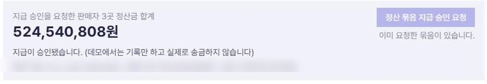
대표님이 얻는 것
설치
AXcellent는 프로그램만 설치하고 서버도 데이터도 회사 것입니다. 쇼핑몰·앱 주소와 API 키를 넣으면 주문·문의 데이터를 받아옵니다.
위험
돈·게시·배포는 대표님 승인과 기록을 거칩니다. 근거가 없으면 지어내지 않고 “확인할 수 없음”으로 둡니다.
효과
같은 장애가 나면 지난 기록을 찾아 씁니다. 각 AI가 맡은 일을 제때 끝냈는지도 점수·순위 없이 확인합니다.
효과는 시연 환경에서 확인한 동작이며 비용 절감·인력 대체를 약속하지 않습니다.
함께하는 고객사
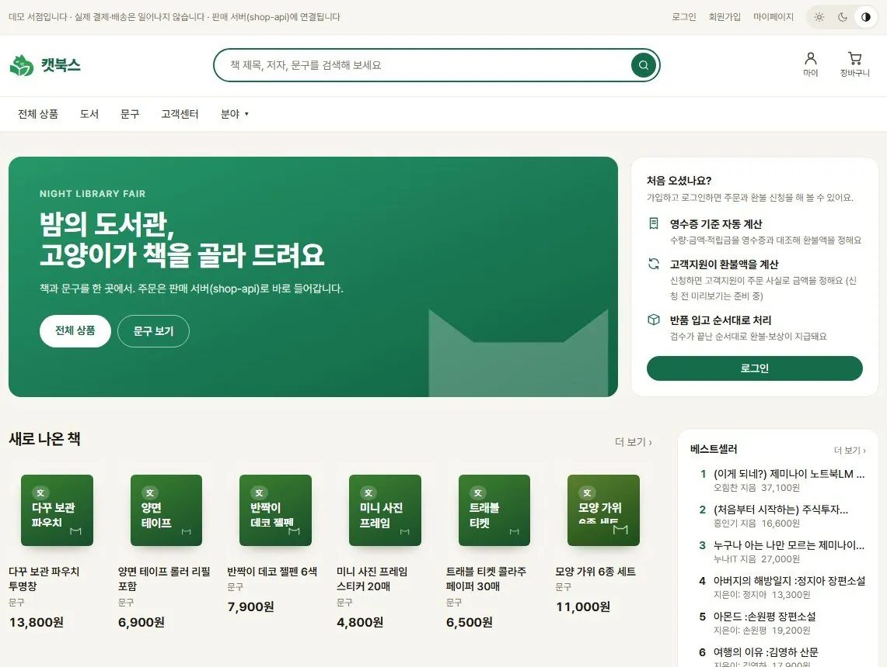
시연 가상 고객사
책과 문구를 파는 온라인 서점. 고객지원·재무·마케팅·데이터분석 AI가 판매 서버와 연결돼 일합니다.
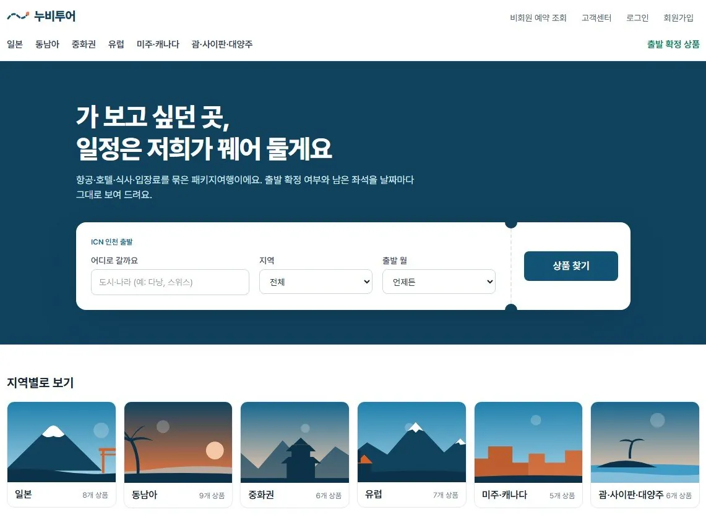
시연 가상 고객사연결 준비 중
패키지여행 예약 사이트. AXcellent를 모르는 상태로 만든 두 번째 고객사로 연결을 준비하고 있습니다.
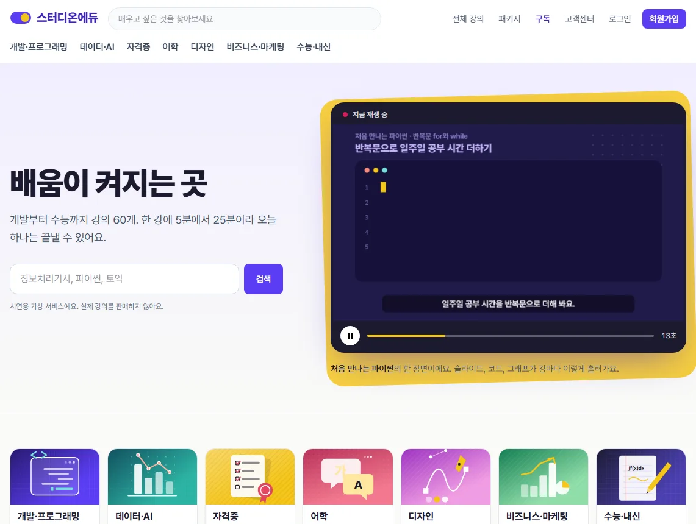
시연 가상 고객사연결 준비 중
온라인 강의 사이트. 강의·강사는 모두 시연을 위해 만든 가상 데이터이고, AXcellent와 연결을 준비하고 있습니다.
회사마다 설정(상품 정보·조직도)을 따로 두어 업종이 달라도 같은 AI 직원 구조를 붙일 수 있게 설계했습니다.
콘텐츠
AXcellent 홍보 영상과, 시연용 가상 고객사 캣북스를 위해 만든 인스타그램 게시물을 모았습니다. 반응 수치는 실제로 측정한 값이 생긴 뒤에만 표시합니다.
AI 직원 9명이 서로 일을 넘기고, 돈과 외부 게시는 대표님이 승인하는 흐름을 8쪽으로 정리했습니다. 이 자료의 화면·숫자는 시연 환경(가상 데이터) 기준입니다.
8쪽 · 약 6.6MBAXcellent 홍보 영상
AI 직원들이 서로 알아서 일하고 돈과 외부 게시는 대표님이 승인합니다. 자막만 나오고 소리는 없습니다. 시연 환경(가상 데이터) 기준.
AXcellent 홍보 영상
장애 하나에, AI 아홉이 일을 나눠 맡아요. 소리(배경음악)가 나옵니다. 시연 환경(가상 데이터) 기준. 영상 속 안전 관문의 “10분”은 쿠폰·환불 같은 일반 보류 기준이며, 판매자 정산 지급 보류는 24시간입니다.
AXcellent 홍보 영상
AI 직원들이 서로 일을 이어받고, 돈과 외부 게시는 대표님이 승인합니다. 남성 나레이션과 BGM이 나옵니다(소리가 나옵니다). 장면과 인물은 AI가 만든 것이며 시연 환경(가상 데이터) 기준.
시연 가상 고객사
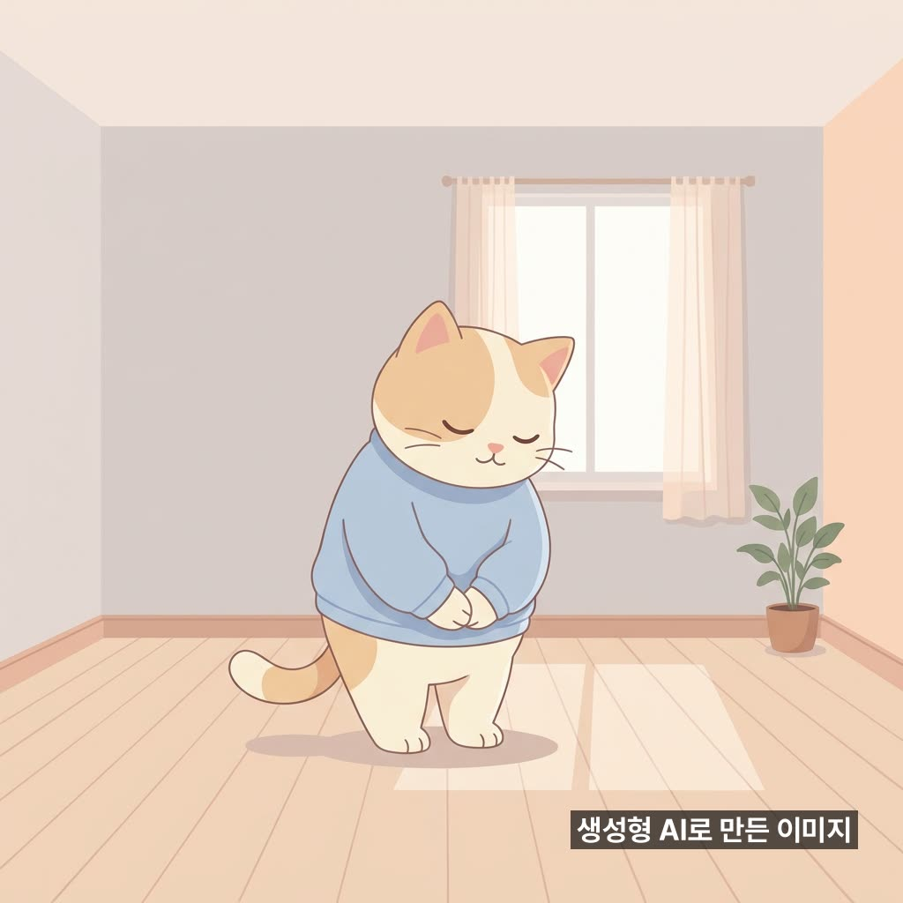
AI가 만든 게시물캣북스 사과 안내 결제 이용이 정상으로 돌아왔습니다. 불편을 드려 죄송합니다. 원인은 장애 직전에 적용한 서비스 업데이트였습니다. 이 업데이트에 문제가 있어 결제 이용이 원활하지 않았습니다. 문제가 된 업데이트를 이전 상태로 되돌렸고, 정상 이용을 확인했습니다. 불편을 겪으신 고객님께는 보상 쿠폰을 드렸습니다. 이 글과 이미지는 AI로 만들었습니다. 캣북스는 시연용 가상 서비스이며 실제 거래·배송이 없습니다. 주문·결제·환불 등은 캣북스 이용약관·구매자 이용약관에 따릅니다. #캣북스
인스타에서 보기새 상품이 등록되었습니다. 이 글과 이미지는 AI로 만들었습니다. 캣북스는 시연용 가상 서비스이며 실제 거래·배송이 없습니다. 주문·결제·환불 등은 캣북스 이용약관·구매자 이용약관에 따릅니다. #캣북스
인스타에서 보기베스트셀러 소설 베스트 3종을 10대가 자주 보는 숏폼 15초 형식으로 소개하고, 베스트셀러 순위에 오른 이유를 한 장면으로 보여준다. 10대 검색이 평소 대비 1.3배, "베스트셀러" 네이버 검색이 평소 대비 1.2배로 나타났다. 정보·팁 숏츠 중앙값 조회는 77.0만이라 짧은 영상 형식과 맞는다. 근거 - "베스트셀러" 네이버 검색 평소 대비: 1.2배 - 10대 검색 평소 대비: 1.3배 - "정보·팁" 숏츠 중앙값 조회: 77.0만 이 글과 영상은 AI로 만들었습니다. 캣북스는 시연용 가상 서비스이며 실제 거래·배송이 없습니다. 주문·결제·환불 등은 캣북스 이용약관·구매자 이용약관에 따릅니다. #캣북스
인스타에서 보기책 읽기 좋은 오후, 고양이 사서와 함께 한 페이지 넘겨 보세요. 이 글과 이미지는 AI로 만들었습니다. 캣북스는 시연용 가상 서비스이며 실제 거래·배송이 없습니다. 주문·결제·환불 등은 캣북스 이용약관·구매자 이용약관에 따릅니다. #캣북스
인스타에서 보기시연 가상 고객사
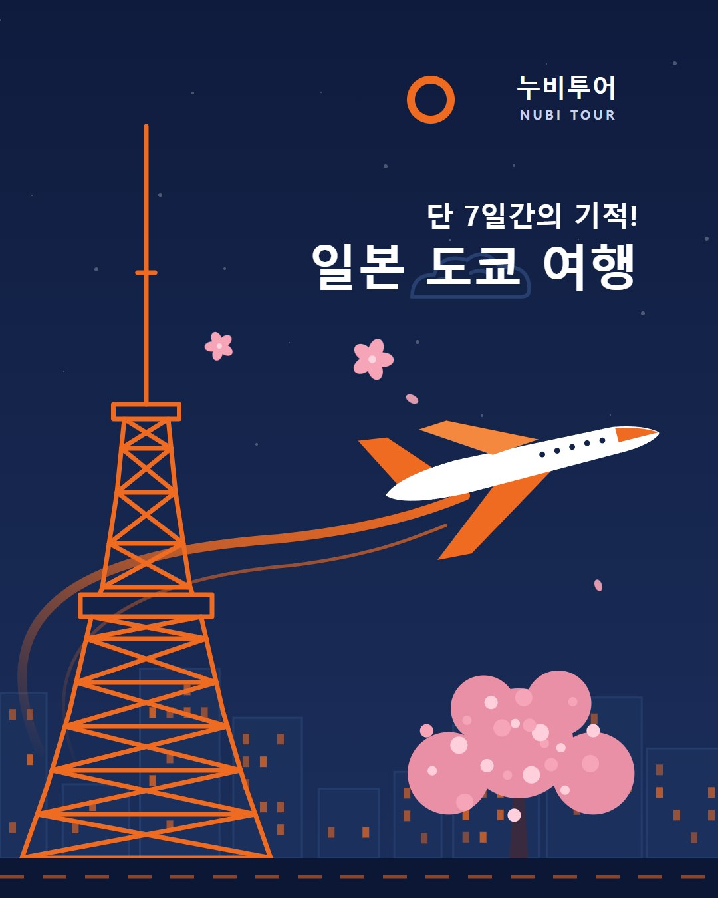
AI가 만든 게시물단 7일간의 기적! 일본 도쿄 여행 도쿄타워가 반짝이는 도쿄의 밤으로 떠나 봐요. 오른쪽으로 넘기지 말고 옆 게시물을 이어서 보세요. 한 장의 포스터가 완성돼요. 예약기간 11.20 - 11.26 출발일 12.01 - 02.28 이 이미지는 일러스트입니다. 누비투어는 시연용 가상 서비스이며 실제 예약·결제가 없습니다. #누비투어 #도쿄여행 #일본여행 #도쿄타워
인스타에서 보기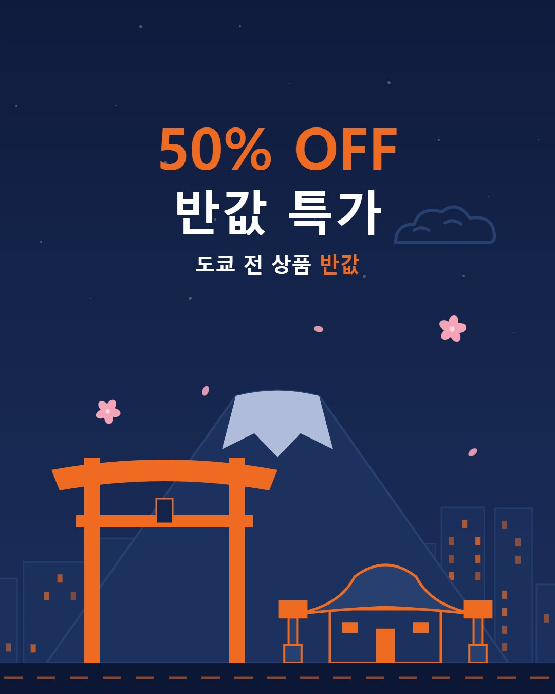
AI가 만든 게시물50% OFF 반값 특가! 도쿄 전 상품이 반값이에요. 도리이 문을 지나 도쿄돔까지, 도쿄 곳곳을 반값으로 만나 보세요. 예약기간 11.20 - 11.26 출발일 12.01 - 02.28 이 이미지는 일러스트입니다. 누비투어는 시연용 가상 서비스이며 실제 예약·결제와 할인이 없습니다. #누비투어 #반값특가 #도쿄여행 #여행할인
인스타에서 보기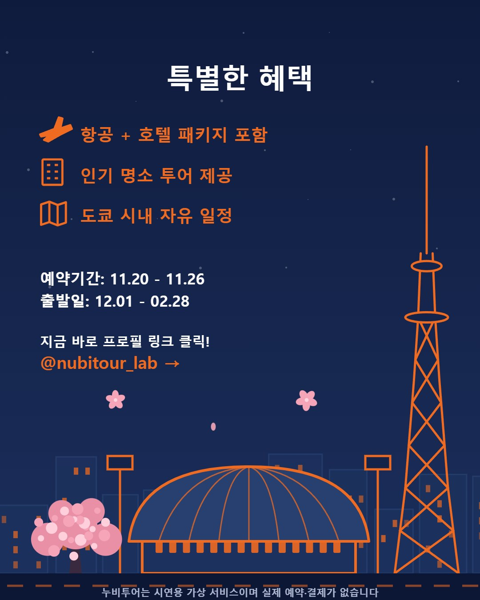
AI가 만든 게시물특별한 혜택, 이렇게 담았어요. ✔ 항공 + 호텔 패키지 포함 ✔ 인기 명소 투어 제공 ✔ 도쿄 시내 자유 일정 예약기간 11.20 - 11.26 출발일 12.01 - 02.28 지금 바로 프로필 링크를 눌러 보세요. 이 이미지는 일러스트입니다. 누비투어는 시연용 가상 서비스이며 실제 예약·결제가 없습니다. #누비투어 #도쿄여행 #패키지여행 #여행스타그램
인스타에서 보기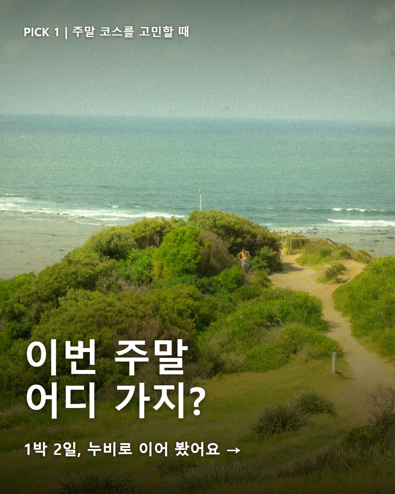
여러 장AI가 만든 게시물이번 주말 어디 가지? 1박 2일 코스, 누비로 이어 봤어요. 바다 앞 작은 숙소에서 시작해 시장 골목 국수집, 언덕 위 카페를 지나 다음 날 노을 전망대에서 마무리하는 코스예요. 마지막 장을 저장해 두고 이번 주말에 떠나 보세요. 사진은 Unsplash 무료 이용 사진을 사용했습니다. 누비투어는 시연용 가상 서비스이며 실제 예약·결제가 없습니다. #누비투어 #주말여행 #1박2일 #여행코스
인스타에서 보기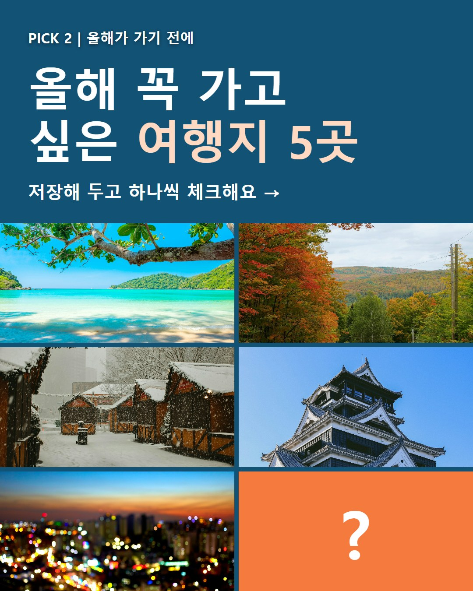
여러 장AI가 만든 게시물올해가 가기 전에 꼭 가고 싶은 여행지 5곳. 푸른 바다 해변, 단풍 산길, 눈 내리는 마을, 고즈넉한 고성, 반짝이는 야경까지. 저장해 두고 다녀올 때마다 하나씩 체크해 보세요. 여러분의 버킷리스트 한 곳은 어디인가요? 댓글로 알려 주세요. 사진은 Unsplash 무료 이용 사진을 사용했습니다. 누비투어는 시연용 가상 서비스이며 실제 예약·결제가 없습니다. #누비투어 #여행버킷리스트 #가고싶은여행지 #여행스타그램
인스타에서 보기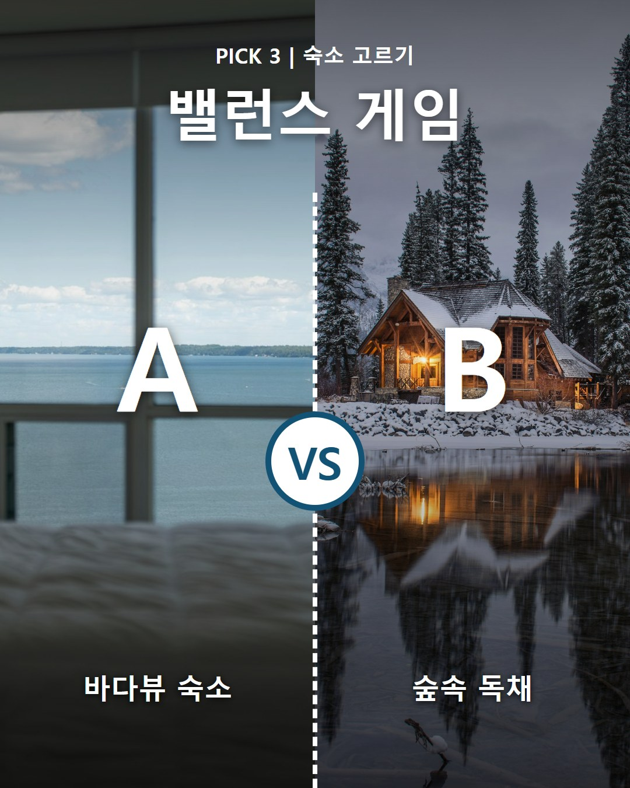
여러 장AI가 만든 게시물숙소 고르기 밸런스 게임! A. 파도 소리로 일어나는 바다뷰 숙소 B. 새소리로 일어나는 숲속 독채 여러분의 선택은? 댓글로 A 또는 B를 남겨 주세요. 같이 갈 친구를 태그해서 함께 골라 봐도 좋아요. 사진은 Unsplash 무료 이용 사진을 사용했습니다. 누비투어는 시연용 가상 서비스이며 실제 예약·결제가 없습니다. #누비투어 #밸런스게임 #숙소추천 #여행
인스타에서 보기시연 가상 고객사
스터디온에듀
시연용 가상 서비스 스터디온에듀를 소개하는 영상입니다. 남성 나레이션과 배경음악이 나옵니다(소리가 나옵니다). 올빼미 캐릭터와 음성은 AI가 만든 것이며, 화면의 데이터는 모두 가상(시연 환경)입니다.
시연용 가상 고객사의 홍보물입니다. AI로 만든 영상·게시물에는 “AI가 만든 영상” 표시를 붙입니다.
동네 책방 같은 작은 가게도 회사 안에서 AI 직원들과 함께 일할 수 있습니다.
도입 상담은 이메일로 받습니다: dejasix66@gmail.com